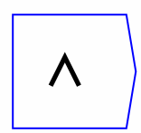
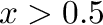

Next: or
Up: Binary Operations
Previous: max
Contents

Logical and of  and
and  , where
, where  means false, and
means false, and

means true. The output is 1 or 0, depending
on the result being true (1) or false (0) respectively.
The operator can be placed on the canvas in two ways:
- From the Binary Operations (``binop'') toolbar; or
- By typing the letters "and_" (the word and, followed by an
underscore) on the canvas and then pressing the Enter key. The underscore
is needed because ``and'' is a reserved word in C++, the
programming language in which Ravel is written.